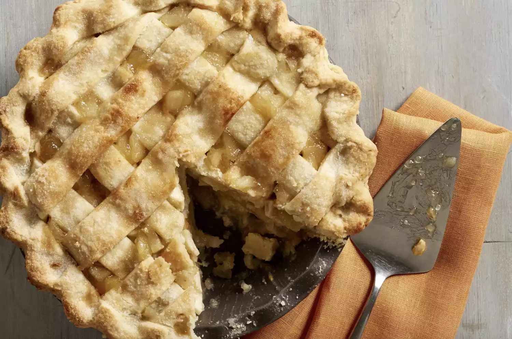

Apple Pie Recipe

The best Apple Pie recipe of the internet
For people, Apple Pie is one of the most delicious food you can find on earth.
I promise this recipe will fulfill all your most sweet dreams
and all your family will enjoy this dessert after the meal.
What are you waiting for? Lets get that kitchen and start to cook right now!
For this Recipe you will need this ingredients:
- Apples: eight of them
- Butter: a half of cup
- Sugar: one cup
- Pie crust: nine inch (You can buy it from store)
- Fluor: three tablespoons full of fluor
- Water: a quarter of cup
Now lets make our pie with the next steps!
- Make the filling: On the stove, make a paste combining fluor and butter.
Add the sugar and bring it to a boil. Simmer, then remove from heat.
- Assemble the pie: Press one crust into a pie plate. Place the sliced
apples on the bottom crust. Use the top crust to make a lattice crust
according to the recipe below. Pour the butter-sugar mixture over
the lattice crust.
- Bake the pie: You'll bake the pie at 425F in a preheated oven for
15 minutes. Then you'll reduce the temperature to 350F and continue
baking for 30-45 minutes. All with be baked within an hour and you
can see if the apples are soft, if so... You done!